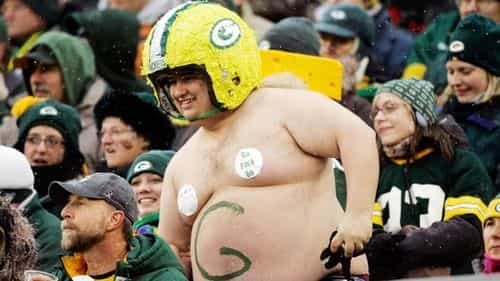
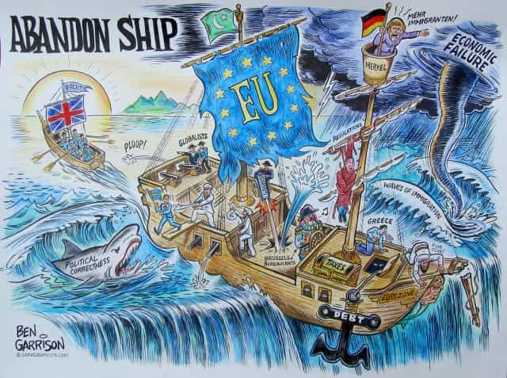

One Englishman promoting the great libertarian values and sociobiological qualities of the West. Visit my page, That Libertarian Chap, here - https://www.facebook.com/thatlibertarianchap


As someone who has written for various right-wing websites, I am only too aware of the deep need felt by white men across the West for an identity and community. Indeed, these things are fundamental human needs, as Maslow pointed out in his famous ‘hierarchy of needs’ – needs which I have felt for as long as I can remember. The problem is: we are seeking fulfilment in all the wrong places.

Sports teams, regardless of how little they truly represent the local demographic, are the most common and abhorrently sad display of this. Seeing grown men paint themselves, chant religiously, fight vehemently with other teams and weep bitterly at any loss would make sense if it was for some ritual concerning a shared myth or metaphysical belief which bound some group together at a subconscious level. But this is all most commonly seen at football matches – a glorified children’s game. Such is the pathetically desperate need of the Western man for a cultural identity.
When we look at minority communities, welcomed into Western countries with remarkably great ease and even more remarkable numbers, the why and wherefore of our lack of European communities become even clearer. ‘Muslims need to integrate,’ the civic nationalist mindlessly insists. ‘Integrate into what?’ they must think, as they pay lip service to the consumerism we call our culture. Nevertheless, the licentious West invites greater numbers of young men from these more cohesive groups, filling our cultural vacuum.
Those complaining about a lack of integration should be attending a church, or doing something to build up their own communities. After all, if our civilization lacks something, it is our sore lack of the very cultural technology Muslims still possess. In this feeble condition, all complaints to the state fall on deaf ears; its coercive power follows the path of least resistance, falling on weak, white (as yet) majorities. We are an easy and bounteous target.
Naturally, this begs the question: if even our own political class refuse to protect us adequately, how can we expect other civilizations to treat us? I therefore contend that the irresponsible omission by our men to develop and maintain strong community institutions alone makes terror attacks inevitable in the West.

Sadder still, following the now commonplace bombings, stabbings etc., you see the soulless Westerner desperately trying to find his heartbeat – some sign of life in their civilization, anything to hang their flimsy value system on:
The right look to patriotism, but that too must be based on something. A superior people, perhaps? The Brits, Germans and now the Scandinavians have all tried this in one way or other but they have all ignored the dangers of our excessively individualistic tendencies when not bound by an absolute, objective and transcendent creed.
The left look to love, but…what love? Did I miss the history lesson in which humanity was inherently lovely? Resources are less scarce now, sure, permitting enough peace for middle-class leftists to forget the brutish nature of man; yet, we can hardly describe the West as a beacon of love to the world. Our hyper-individualised society only knows of going to and from the workplace, indistinguishable cafes and home; personalism and the community are all but extinct here.
The thing we are all looking for, which has been replaced (left and right) by the state, is Christendom.
Identitarians will probably stop reading here. Race is first and foremost for preserving Western civilization in their estimation. What they fail to understand is that you must have the whole package. Of course, ethnic homogeneity is vitally important for preserving a high trust society, which in turn is important for markets, the rule of law and any other Western institution you could care to mention. Of course! But is that all it takes to keep unity amongst Europeans?
Either I have missed yet another history lesson or Europeans have always been a danger to each other because of our individualistic psychology – generally above average on the psychopathic scale. Was Pagan Rome unity? Not sustainably; their statism, adopted in part from the Near-East, allowed too much scope for irresponsibility among the political class.
The proverbial Ring of Power could not be resisted by plutocrats, especially not following the Renaissance and the Reformation, when proper states formed in Northern Europe and all conceivable institutions became centralised as a means of control. Welcome to modern Europe.
The EU has tried in vain to unite Europe under this soulless, modern system of centralised statism. But it is currently failing and, indeed, can never succeed because it functions in fundamental opposition to human nature; the nature of Europeans to be more precise. Pope John Paul II called for the EU to recognise its Christian heritage but this was ignored and, not ten years later, the EU began to crumble. Yet, during the greatest periods of decentralisation in Europe, it was the unifying creed of Christendom which not only united the continent of Europe and the mosaic of communities, guilds, universities etc. etc. which comprised her.
It should be noted by all identitarians and made a matter of close study, that the Church (unlike super-tolerant paganism) was able to secure cultural homogeneity within regions, providing peaceful, lawful trading relationships across a diverse Europe, whilst also celebrating and defending the decentralised systems of government and voluntary, individualistic institutions natural to us. It was this system, prior to the rise of nation states, which saw Europeans identify each other as brothers, especially the nobility. Differences could be set aside to handle common foes and preserve an equally common identity.
Just look at Eastern Europe! They are ‘living proof that defence is possible’, as Hungarian PM, Viktor Orban put it, declaring that they ‘will not change their identity’ in the face of the EU bringing Poland, Hungary and the Czech Republic to the ‘Court of Justice’ for not accepting Muslim migrants. What is this identity?
According to Orban, ‘the European identity is rooted in Christianity’. As Prof. Ricardo Duchesne has shown in his brilliant article of the same name, Christianity is a Hellenistic religion and Western civilization is Christian. Therefore, it seems the problem many new right and Christian folk alike now face is the indivisible nature of Christian and European identity. As Belloc put it, ‘the faith is Europe and Europe is the faith.’
Tens of thousands of Polish Christians march for their identity
If we Westerners want our identity back, we have to embrace its entirety and learn the lesson of Eastern Europeans, who have risen from the ashes of Communism, knowing its value. We cannot currently replace the vital cultural technology of religion. Civilizations cannot and do not function without it.
Therefore, it is a monumental oversight, an ideological compulsion or a mental deficiency which could cause one to do so. More than this though, we should revisit this ancient institution which built our civilization in search of the soul of our people, but not simply out of practicality. Our pews are empty, as are so many of the pleasures of our civilization; let us rediscover what gives those Eastern Europeans not just their identity, but their zeal for it.
Read More: Brexit Vote: Why Britain Should Leave The European Union